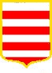

Nou sait bein qu'les St-Ouënnais sont des Gris Ventres – lé mênom veint d'la couleu traditionnelle d'lus corsets d'oeuvre. Mais y'a des mênoms pouor les cheins d'aut's pâraîsses étout: les St. Bréladais sont des Carpéleuses, les Ste. Mathiais sont des Bourdélots, les St. Martinnais, les Trinnetais et les St. Jeannais sont des Nordgiens, et les Villais sont des Clyichards.
Mais sav'-ous pouortchi qu'les Grouvillais et les St. Cliémentais sont mênommés l's Enfuntchis?
Assa, not' mot “enfuntchi” veint d'la feunmée. Quand un feu feunque, l'appartément d'veint enfuntchi. Et y'avait un temps quand les gens d'ches deux pâraîsses-chîn soulaient brûler du vrai pouor pouver faithe sèrvi les chendres pouor graîssi les clios.
Véthe, les mielles et les tèrres sablionneuses des côtes dé l'Êst dé Jèrri n'offraient dgéthe dé riches tèrres, mais les fèrmièrs vraîtchaient et brûlaient lus vieillottes dé vrai, et un Clyichard tchi v'nait dé par la côte, ou un Nordgien tchi d'cendait des pâraîsses d'amont, éthait r'mèrtchi la feunmée tchi bliâsait la pâraîsse dé Grouville au temps pâssé.
Et quand un Grouvillais allait au marchi à St. Hélyi, ch'est probabl'ye qu'nou-s'éthait r'niflié l'odeu d'la brûl'lie dans ses habits. “Ah, né v'là un enfuntchi,” qu'i' dithaient d'un ton motcheux, viyant qu'lé mot “enfuntchi” veurt dithe étout “leuné” ou “bête”.
Bein ritha l'chein tchi ritha l'drein, et l'Grouvillais tch'avait vendu ses chendres ès cheins d'aut's pâraîsses pouôrrait bein affaûrder d'baithe eune fais auve ses anmîns farceurs.
Vive les Enfuntchis!
Geraint Jennings
2004
Viyiz étout: